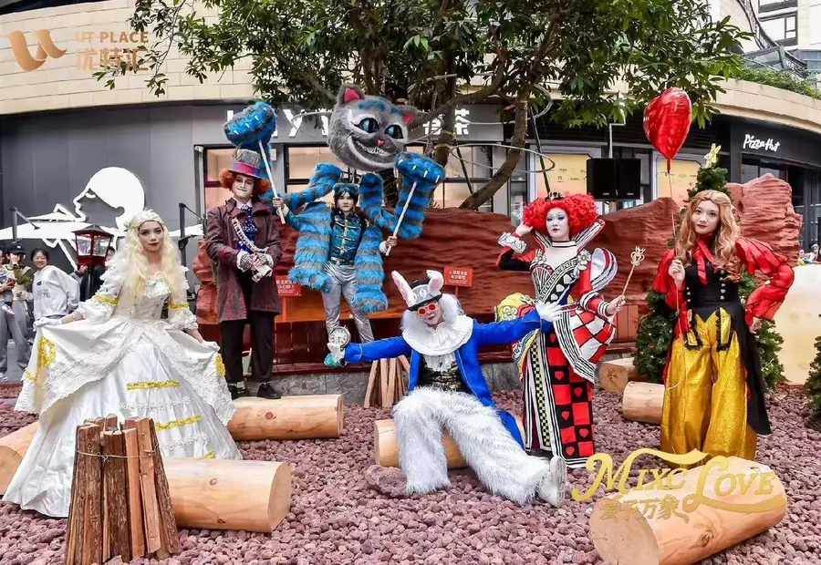

角色设定决定服装结构
客户提供的角色图往往只有正面视觉，实际制作需要补充背面、侧面、头饰、腰封、鞋靴、武器、翅膀或尾巴等结构。彩云端定制会先判断角色属于静态展示、巡游互动还是舞台表演，不同使用方式会影响肩部活动量、裙摆长度、头套视线和配件固定方式。
面料和材料影响质感
动漫服装常用印花面料、仿皮革、毛绒、EVA、泡沫雕刻、金属骨架和轻量化装饰件。高光、金属感、毛绒感和盔甲感都可以通过不同材料表现。商业活动服装还要考虑耐磨、清洁、运输折叠和多场次使用。
打样能降低返工成本
复杂角色不建议直接批量制作。头部、肩甲、翅膀、发光道具、夸张鞋靴等部位最好先做结构打样，确认比例、重量、活动范围和视觉效果。打样阶段的小调整，比成品完成后返工更节省时间和预算。
适合定制的服装类型
- 漫画展和动漫嘉年华角色扮演服装。
- 商场巡游演员服、互动人偶服和舞台表演服。
- 主题乐园、文旅景区和夜游项目巡游服装。
- 品牌IP发布会、快闪活动和商业美陈配套服装。
结语
专业COS服装定制的价值，在于把二维角色转化为可穿戴、可表演、可反复使用的实体服装。彩云端定制可结合动漫道具制作和舞台表演需求，为客户提供一体化方案。